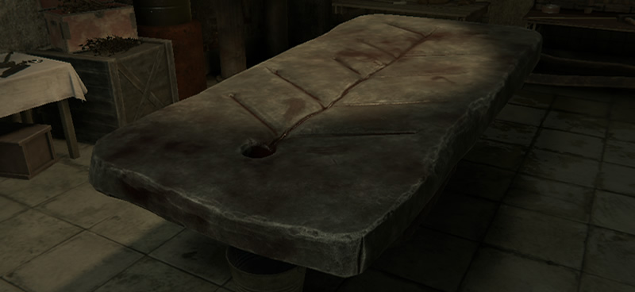
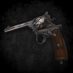
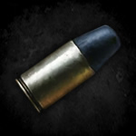
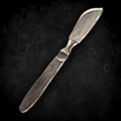
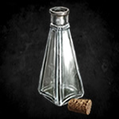

Money
Welcome to our guide about money! Here I will show you step by step how to get rich selling organs at the black market. In short, we will attract bandits to deserted places, kill them, collect their organs and sell, simple like that!

BEWARE: This strategy is dangerous and requires some knowledge of the game's combat system. Therefore, I recommend that you take a look at our combat guide HERE.
Required Items
This strategy will require the following items:
| 1x |
 |
Fire Weapon |
| 2+ |  |
Ammo |
| 1+ |
 |
Surgical Tool |
| 3+ |  |
Empty Bottle |
*The durability of the weapon and surgical tool(s) must be at maximum or near it.